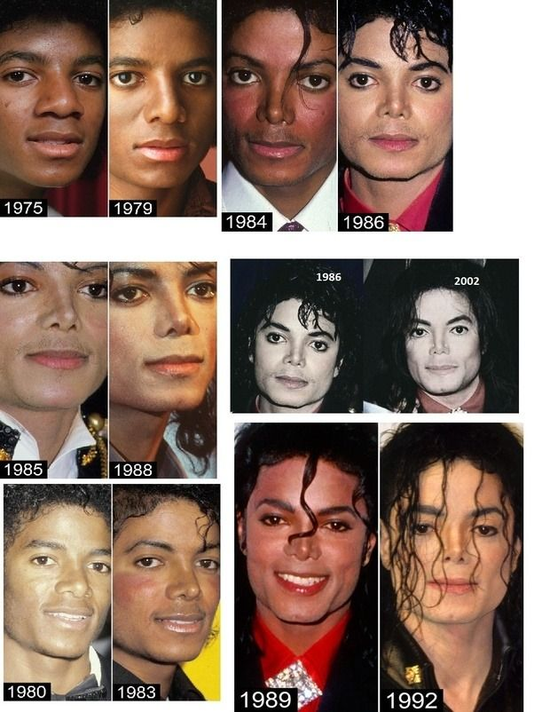
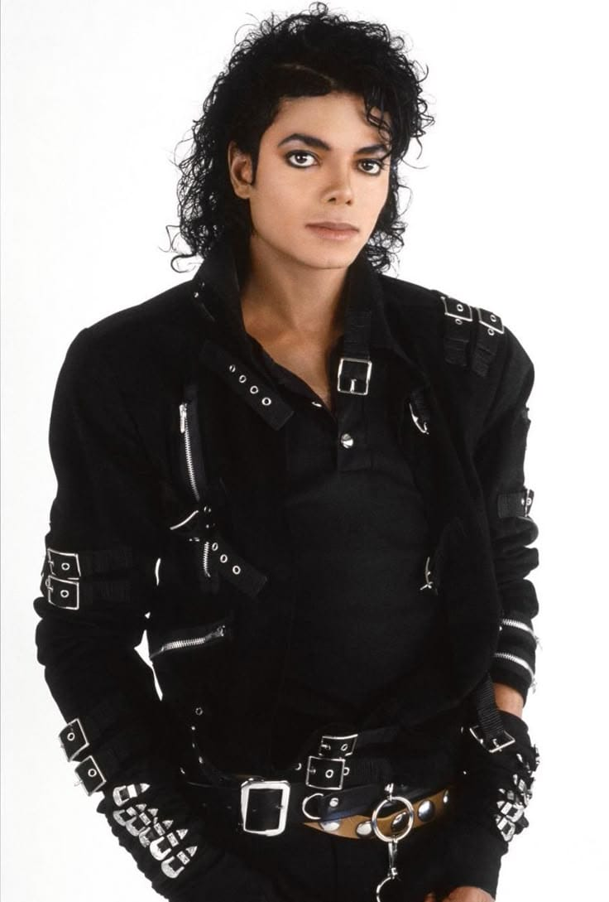

Michael Joseph Jackson, născut pe 29 august în Gary, Indiana, a fost al optulea copil din cei zece ai familiei afro-americane Jackson. Mama sa, Katherine Jackson (născută Scruse), cânta la clarinet, violoncel și pian, aspirase să devină interpretă de muzică country și western și lucra cu jumătate de normă la Sears, fiind Martoră a lui Iehova. Tatăl său, Joe Jackson, a fost fost boxer și operator de macara la US Steel și cânta la chitară pentru trupa locală de rhythm and blues The Falcons. Michael a crescut alături de surorile sale Rebbie, La Toya și Janet și frații Jackie, Tito, Jermaine, Marlon și Randy, iar un alt frate, Brandon, geamănul lui Marlon, a murit la scurt timp după naștere. A fost cântăreț, compozitor, dansator și filantrop, fiind cunoscut drept „Regele Muzicii Pop” și considerat una dintre cele mai importante figuri culturale ale secolului XX. Și-a început cariera solo în 1971, după ce debutase încă din 1964, la vârsta de 6 ani, ca solist principal al grupului Jackson 5. Albumul său din 1982, „Thriller”, rămâne unul dintre cele mai bine vândute din toate timpurile, alături de alte albume celebre precum „Off the Wall” din 1979, „Bad” din 1987, „Dangerous” din 1991 și „HIStory” din 1995. Este recunoscut pentru faptul că a transformat videoclipul muzical într-o formă de artă, iar videoclipurile pieselor „Billie Jean”, „Beat It” și „Thriller” l-au ajutat să devină primul artist afro-american cu un succes major pe MTV. A fost inclus de două ori în Rock and Roll Hall of Fame, iar realizările sale includ mai multe recorduri Guinness, printre care titlul de „cel mai de succes entertainer din toate timpurile”, 13 premii Grammy și vânzări estimate la peste 750 de milioane de discuri la nivel mondial. Unul dintre visele sale a fost să schimbe lumea în bine, donând spitalelor, susținând acte de caritate și orfelinate și încercând să aducă oamenii împreună, indiferent de culoarea pielii, prin întâlniri cu fanii, autografe și dansul său. În timpul liber, Michael Jackson îi plăcea să deseneze și avea o pasiune puternică pentru citit și desene animate. Pentru că nu a avut mulți prieteni în copilărie, găsea adesea confort în aceste activități. De asemenea, iubea foarte mult animalele și a adoptat multe dintre ele, în special pe cele care fuseseră folosite în experimente științifice, încercând să le ofere o viață mai bună și îngrijire. Din păcate, a fost adesea neînțeles, fiind criticat pentru schimbarea culorii pielii, oamenii crezând că își dorea să devină alb, însă în realitate suferea de vitiligo, o afecțiune care determină pierderea pigmentului pielii și care nu este dureroasă, dar este considerată o boală autoimună. De-a lungul timpului, din cauza schimbării aspectului său, în 1993 a fost acuzat pe nedrept de abuz sexual asupra copiilor, lucru care l-a afectat profund, deși nu au existat dovezi suficiente pentru a formula acuzații oficiale împotriva sa.

